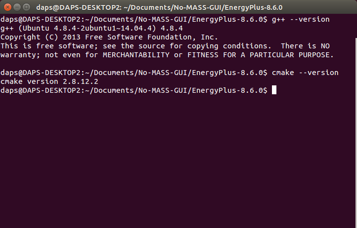
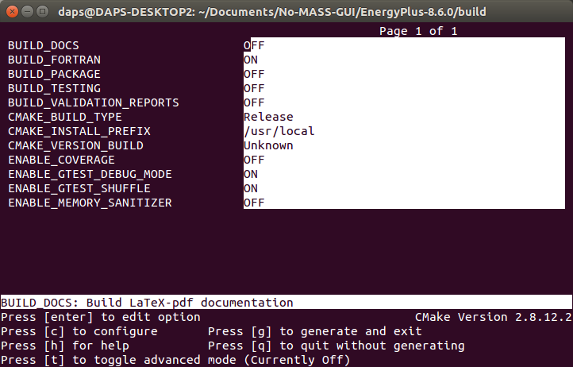
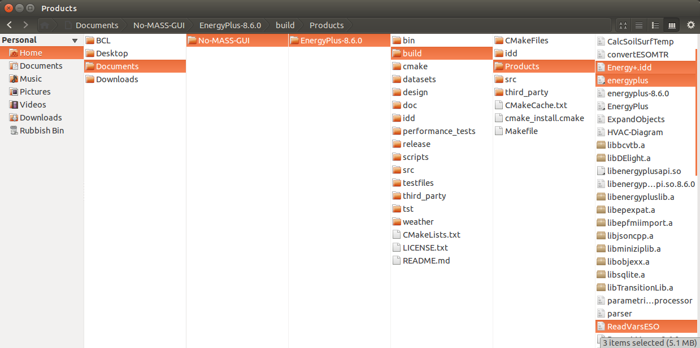
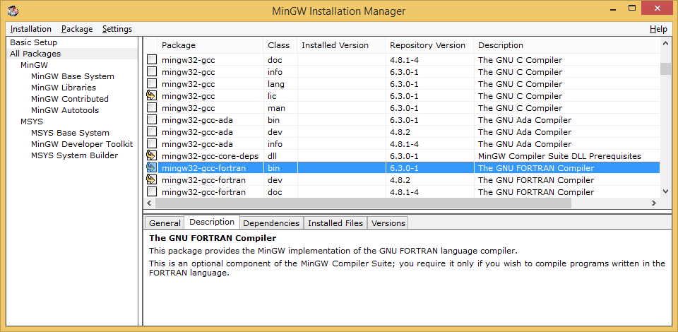
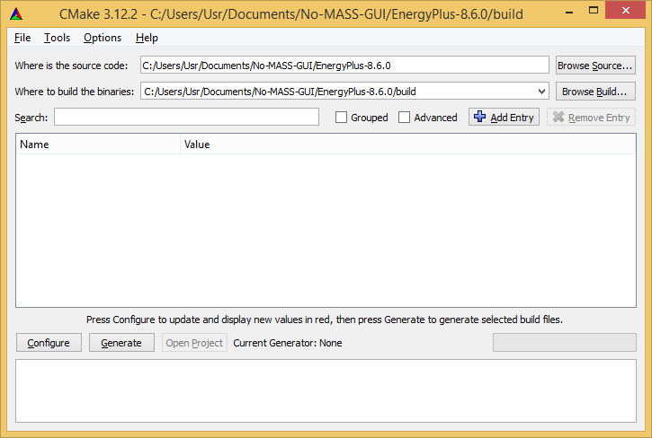
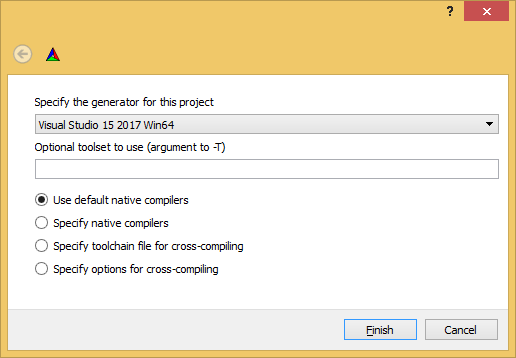
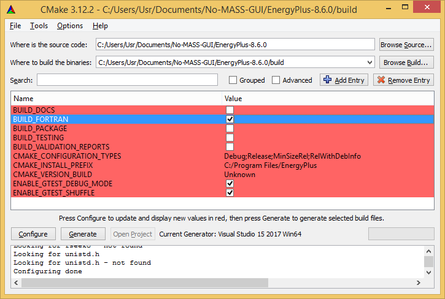
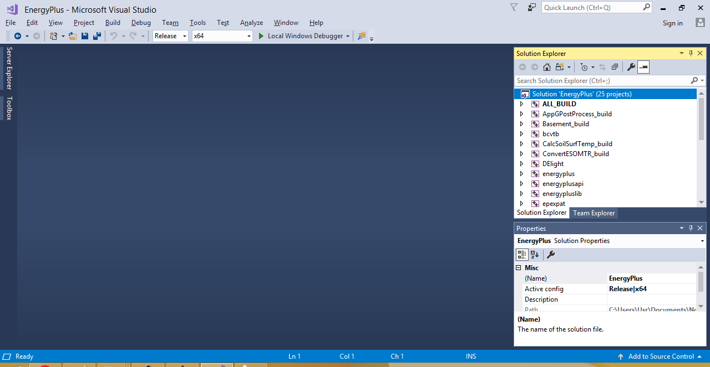

Compiling EnergyPlus
Table of Contents
This chapter describes how to modify the EnergyPlus source code to allow shading interactions and the compilation process on Linux and Windows platforms. The compilation process is based on the Building EnergyPlus guide at https://github.com/NREL/EnergyPlus/wiki/BuildingEnergyPlus.
Download source code
The source code can be download from the GitHub repository at https://energyplus.net/downloads. For example purpose, this guide is based on EnergyPlus version 8.6.0.
EnergyPlus Source Code Changes
Alter the source code to allow shading interactions.
DataSurfaces.hh
--- ../EnergyPlus-8.6.0/src/EnergyPlus/DataSurfaces.hh
+++ ../EnergyPlus-8.6.0/src/EnergyPlus/DataSurfaces.hh
@@ -938,7 +938,12 @@
// triggered on later to control daylight glare
bool ShadingFlagEMSOn; // EMS control flag, true if EMS is controlling ShadingFlag with ShadingFlagEMSValue
int ShadingFlagEMSValue; // EMS control value for Shading Flag
-
+
+ /* No-MASS new lines begin */
+ bool ShadingFractionEMSOn; // EMS control flag, true if EMS is controlling ShadingFlag with ShadingFlagEMSValue
+ double ShadingFractionEMSValue; // EMS control value for Shading Flag
+ /* No-MASS new lines end */
+
int StormWinFlag; // -1: Storm window not applicable
// 0: Window has storm window but it is off
// 1: Window has storm window and it is on
@@ -1167,6 +1172,8 @@
ShadingFlag( ShadeOff ),
ShadingFlagEMSOn( false ),
ShadingFlagEMSValue( 0 ),
+ ShadingFractionEMSOn( false ), /* No-MASS new line --- */
+ ShadingFractionEMSValue( 0 ), /* No-MASS new line --- */
StormWinFlag( -1 ),
StormWinFlagPrevDay( -1 ),
FracTimeShadingDeviceOn( 0.0 ),
@@ -1326,6 +1333,361 @@
SpecTemp( 0.0 ),
WindowModelType( Window5DetailedModel )
{}
+
+ /* No-MASS new lines begin */
+ // Member Constructor
+ SurfaceWindowCalc(
+ int const ShadingFlag, // -1: window has no shading device
+ bool const ShadingFlagEMSOn, // EMS control flag, true if EMS is controlling ShadingFlag with ShadingFlagEMSValue
+ int const ShadingFlagEMSValue, // EMS control value for Shading Flag
+ bool const ShadingFractionEMSOn, // EMS control flag, true if EMS is controlling ShadingFlag with ShadingFlagEMSValue
+ int const ShadingFractionEMSValue, // EMS control value for Shading Flag
+ int const StormWinFlag, // -1: Storm window not applicable
+ int const StormWinFlagPrevDay, // Previous time step value of StormWinFlag
+ Real64 const FracTimeShadingDeviceOn, // For a single time step, = 0.0 if no shading device or shading device is off,
+ int const ExtIntShadePrevTS, // 1 if exterior or interior blind or shade in place previous time step;
+ int const ShadedConstruction, // For windows with shading, the construction with shading
+ bool const SurfDayLightInit, // surface has been initialized for following 5 arrays
+ Array1< Real64 > const & SolidAngAtRefPt, // Solid angle subtended by window from daylit ref points 1 and 2
+ Array1< Real64 > const & SolidAngAtRefPtWtd, // Solid angle subtended by window from
+ Array2< Real64 > const & IllumFromWinAtRefPt, // Illuminance from window at ref pts for window
+ Array2< Real64 > const & BackLumFromWinAtRefPt, // Window background luminance from window wrt ref pts (cd/m2)
+ Array2< Real64 > const & SourceLumFromWinAtRefPt, // Window luminance at ref pts for window
+ int const DaylFacPoint, // Pointer to daylight factors for the window
+ Real64 const VisTransSelected, // Window vis trans at normal incidence selected for use in dayltg calculation
+ Real64 const SwitchingFactor, // Window switching factor (0.0 = unswitched; 1.0 = fully switched)
+ Array1< Real64 > const & WinCenter, // X,Y,Z coordinates of window center point in building coord system
+ Real64 const Theta, // Azimuth of window normal (rad)
+ Real64 const Phi, // Altitude of window normal (rad)
+ Real64 const RhoCeilingWall, // Average interior reflectance seen by light moving up across horizontal
+ Real64 const RhoFloorWall, // Same as above, but for light moving down
+ Real64 const FractionUpgoing, // Fraction light entering window that goes upward
+ Real64 const VisTransRatio, // For windows with switchable glazing, ratio of normal transmittance
+ Array1< Real64 > const & ThetaFace, // Face temperatures of window layers (K)
+ Real64 const IRfromParentZone, // Incident IR from parent zone (W/m2)
+ int const IRErrCount, // For recurring error counts
+ int const IRErrCountC, // For recurring error counts (continuation)
+ Real64 const FrameArea, // Frame projected area (m2)
+ Real64 const FrameConductance, // Frame conductance [no air films] (W/m2-K)
+ Real64 const FrameSolAbsorp, // Frame solar absorptance (assumed same inside and outside)
+ Real64 const FrameVisAbsorp, // Frame visible absorptance (assumed same inside and outside)
+ Real64 const FrameEmis, // Frame thermal emissivity (thermal absorptance) (assumed same
+ Real64 const FrameAreaXEmiss, // Frame area times thermal emissivity (m2)
+ Real64 const FrameRadExchangeFactor, // Frame IR radiant exchange factor
+ Real64 const FrameHRadLinIn, // Frame linearized inside IR radiation conductance (W/m2-K)
+ Real64 const FrameRadThermalFluxRec, // Frame inside IR flux received (W/m2)
+ Real64 const FrameRadThermalFluxRecOld, // Previous value of frame inside IR flux received (W/m2)
+ Real64 const FrEdgeToCenterGlCondRatio, // Ratio of frame edge of glass conductance (without air films) to
+ Real64 const FrameEdgeArea, // Area of glass near frame (m2)
+ Real64 const FrameTempSurfIn, // Frame inside surface temperature (C)
+ Real64 const FrameTempSurfInOld, // Previous value of frame inside surface temperature (C)
+ Real64 const FrameTempSurfOut, // Frame outside surface temperature (C)
+ Real64 const FrameQRadInAbs, // Radiation absorbed by inside of frame (short-wave from solar
+ Real64 const FrameQRadOutAbs, // Radiation absorbed by outside of frame (solar) (W/m2)
+ Real64 const ProjCorrFrOut, // Correction factor to absorbed radiation due to frame outside projection
+ Real64 const ProjCorrFrIn, // Correction factor to absorbed radiation due to frame inside projection
+ int const DividerType, // Divider type (1=DividedLite, 2=Suspended (between-pane))
+ Real64 const DividerArea, // Divider projected area (m2)
+ Real64 const DividerConductance, // Divider conductance [no air films] (W/m2-K)
+ Real64 const DividerSolAbsorp, // Divider solar absorptance (assumed same inside and outside)
+ Real64 const DividerVisAbsorp, // Divider visible absorptance (assumed same inside and outside)
+ Real64 const DividerEmis, // Divider thermal emissivity (thermal absorptance) (assumed same
+ Real64 const DividerAreaXEmiss, // Divider area times thermal emissivity (m2)
+ Real64 const DividerRadExchangeFactor, // Divider IR radiant exchange factor
+ Real64 const DividerHRadLinIn, // Divider linearized inside IR radiation conductance (W/m2-K)
+ Real64 const DividerRadThermalFluxRec, // Divider inside IR flux received (W/m2)
+ Real64 const DividerRadThermalFluxRecOld, // Previous value of divider inside IR flux received (W/m2)
+ Real64 const DivEdgeToCenterGlCondRatio, // Ratio of divider edge of glass conductance (without air films) to
+ Real64 const DividerEdgeArea, // Area of glass near dividers (m2)
+ Real64 const DividerTempSurfIn, // Divider inside surface temperature (C)
+ Real64 const DividerTempSurfInOld, // Previous value of divider inside surface temperature (C)
+ Real64 const DividerTempSurfOut, // Divider outside surface temperature (C)
+ Real64 const DividerQRadInAbs, // Radiation absorbed by inside of divider (short-wave from solar
+ Real64 const DividerQRadOutAbs, // Radiation absorbed by outside of divider (solar) (W/m2)
+ Real64 const ProjCorrDivOut, // Correction factor to absorbed radiation due to divider outside projection
+ Real64 const ProjCorrDivIn, // Correction factor to absorbed radiation due to divider inside projection
+ Real64 const GlazedFrac, // (Glazed area)/(Glazed area + divider area)
+ Array1< Real64 > const & OutProjSLFracMult, // Multiplier on sunlit fraction due to shadowing of glass by frame
+ Array1< Real64 > const & InOutProjSLFracMult, // Multiplier on sunlit fraction due to shadowing of glass by frame
+ Real64 const CenterGlArea, // Center of glass area (m2); area of glass where 1-D conduction dominates
+ Real64 const EdgeGlCorrFac, // Correction factor to center-of-glass conductance to account for
+ int const OriginalClass, // 0 or if entered originally as:
+ Real64 const ExtBeamAbsByShade, // Exterior beam solar absorbed by window shade (W/m2)
+ Real64 const ExtDiffAbsByShade, // Exterior diffuse solar absorbed by window shade (W/m2)
+ Real64 const IntBeamAbsByShade, // Interior beam solar absorbed by window shade (W/m2)
+ Real64 const IntSWAbsByShade, // Interior diffuse solar plus short-wave from lights absorbed by window shade (W/m2)
+ Real64 const InitialDifSolAbsByShade, // Initial diffuse solar from ext and int windows absorbed by window shade (W/m2)
+ Real64 const IntLWAbsByShade, // Interior long-wave from zone lights and equipment absorbed by window shade (W/m2)
+ Array1< Real64 > const & ShadeAbsFacFace, // Fraction of short-wave radiation incident on face 1 that is
+ Real64 const ConvCoeffWithShade, // Convection coefficient from glass or shade to gap air when
+ Real64 const ConvHeatFlowNatural, // Convective heat flow from gap between glass and interior shade or blind (W)
+ Real64 const ConvHeatGainToZoneAir, // Convective heat gain to zone air from window gap airflow (W)
+ Real64 const RetHeatGainToZoneAir, // Convective heat gain to return air sent to zone [W]
+ Real64 const DividerConduction, // Conduction through divider from outside to inside face (W)
+ Real64 const OtherConvHeatGain, // other convective = total conv - standard model prediction for EQL window model (W)
+ int const BlindNumber, // Blind number for a window with a blind
+ Array1< Real64 > const & EffShBlindEmiss, // Effective emissivity of interior blind or shade
+ Array1< Real64 > const & EffGlassEmiss, // Effective emissivity of glass adjacent to interior blind or shade
+ Real64 const EffInsSurfTemp, // Effective inside surface temperature for window with interior blind or
+ bool const MovableSlats, // True if window has a blind with movable slats
+ Real64 const SlatAngThisTS, // Slat angle this time step for window with blind on (radians)
+ Real64 const SlatAngThisTSDeg, // Slat angle this time step for window with blind on (deg)
+ bool const SlatAngThisTSDegEMSon, // flag that indicate EMS system is actuating SlatAngThisTSDeg
+ Real64 const SlatAngThisTSDegEMSValue, // value that EMS sets for slat angle in degrees
+ bool const SlatsBlockBeam, // True if blind slats block incident beam solar
+ Real64 const BlindAirFlowPermeability, // Blind air-flow permeability for calculation of convective flow
+ Real64 const TotGlazingThickness, // Total glazing thickness from outside of outer glass to inside of inner glass (m)
+ Real64 const ProfileAngHor, // Horizontal beam solar profile angle (degrees)
+ Real64 const ProfileAngVert, // Vertical beam solar profile angle (degrees)
+ Real64 const TanProfileAngHor, // Tangent of horizontal profile angle
+ Real64 const TanProfileAngVert, // Tangent of vertical profile angle
+ Real64 const InsideSillDepth, // Depth of inside sill (m)
+ Real64 const InsideReveal, // Depth of inside reveal (m)
+ Real64 const InsideSillSolAbs, // Solar absorptance of inside sill
+ Real64 const InsideRevealSolAbs, // Solar absorptance of inside reveal
+ Real64 const OutsideRevealSolAbs, // Solar absorptance of outside reveal
+ Real64 const BmSolAbsdInsReveal, // Multiplied by BeamSolarRad, gives beam solar absorbed
+ Real64 const BmSolRefldInsReveal, // Multiplied by BeamSolarRad, gives beam solar reflected
+ Real64 const BmSolRefldInsRevealReport, // Beam solar reflected by inside reveal surfaces, for reporting (W)
+ Real64 const BmSolRefldOutsRevealReport, // Beam solar reflected by outside reveal surfaces, for reporting (m2)
+ Real64 const BmSolAbsdOutsReveal, // Multiplied by BeamSolarRad, gives beam solar absorbed by
+ Real64 const OutsRevealDiffOntoGlazing, // Multiplied by BeamSolarRad, gives diffuse from beam reflection from
+ Real64 const InsRevealDiffOntoGlazing, // Multiplied by BeamSolarRad, gives diffuse from beam reflection
+ Real64 const InsRevealDiffIntoZone, // Multiplied by BeamSolarRad, gives diffuse from beam reflection
+ Real64 const OutsRevealDiffOntoFrame, // Multiplied by BeamSolarRad, gives diffuse from beam reflection from outside reveal
+ Real64 const InsRevealDiffOntoFrame, // Multiplied by BeamSolarRad, gives diffuse from beam reflection from inside reveal
+ Real64 const InsRevealDiffOntoGlazingReport, // Diffuse solar from beam reflection
+ Real64 const InsRevealDiffIntoZoneReport, // Diffuse from beam reflection
+ Real64 const InsRevealDiffOntoFrameReport, // Diffuse from beam reflection from inside reveal
+ Real64 const BmSolAbsdInsRevealReport, // Beam solar absorbed by inside reveal (W)
+ Real64 const BlTsolBmBm, // Time-step value of blind beam-beam solar transmittance (-)
+ Real64 const BlTsolBmDif, // Time-step value of blind beam-diffuse solar transmittance (-)
+ Real64 const BlTsolDifDif, // Time-step value of blind diffuse-diffuse solar transmittance (-)
+ Real64 const BlGlSysTsolBmBm, // Time-step value of blind/glass system beam-beam solar transmittance (-)
+ Real64 const BlGlSysTsolDifDif, // Time-step value of blind/glass system diffuse-diffuse solar transmittance (-)
+ int const ScreenNumber, // Screen number for a window with a screen (do not confuse with material number)
+ Real64 const ScTsolBmBm, // Time-step value of screen beam-beam solar transmittance (-)
+ Real64 const ScTsolBmDif, // Time-step value of screen beam-diffuse solar transmittance (-)
+ Real64 const ScTsolDifDif, // Time-step value of screen diffuse-diffuse solar transmittance (-)
+ Real64 const ScGlSysTsolBmBm, // Time-step value of screen/glass system beam-beam solar transmittance (-)
+ Real64 const ScGlSysTsolDifDif, // Time-step value of screen/glass system diffuse-diffuse solar transmittance (-)
+ Real64 const GlTsolBmBm, // Time-step value of glass beam-beam solar transmittance (-)
+ Real64 const GlTsolBmDif, // Time-step value of glass beam-diffuse solar transmittance (-)
+ Real64 const GlTsolDifDif, // Time-step value of glass diffuse-diffuse solar transmittance (-)
+ int const AirflowSource, // Source of gap airflow (INSIDEAIR, OUTSIDEAIR, etc.)
+ int const AirflowDestination, // Destination of gap airflow (INSIDEAIR, OUTSIDEAIR, etc.)
+ Real64 const MaxAirflow, // Maximum gap airflow (m3/s per m of glazing width)
+ int const AirflowControlType, // Gap airflow control type (ALWAYSONATMAXFLOW, etc.)
+ bool const AirflowHasSchedule, // True if gap airflow is scheduled
+ int const AirflowSchedulePtr, // Gap airflow schedule pointer
+ Real64 const AirflowThisTS, // Gap airflow this timestep (m3/s per m of glazing width)
+ Real64 const TAirflowGapOutlet, // Temperature of air leaving airflow gap between glass panes (C)
+ int const WindowCalcIterationsRep, // Number of iterations in window heat balance calculation
+ Real64 const BmSolTransThruIntWinRep, // Beam solar transmitted through interior window [W]
+ Real64 const VentingOpenFactorRep, // Window/door venting open factor, for reporting
+ Real64 const VentingOpenFactorMultRep, // Window/door opening modulation multiplier on venting open factor, for reporting
+ Real64 const InsideTempForVentingRep, // Inside air temp used to control window/door venting, for reporting (C)
+ Real64 const VentingAvailabilityRep, // Venting availability schedule value (0.0/1.0 = no venting allowed/not allowed)
+ Real64 const IllumFromWinAtRefPt1Rep, // Illuminance from window at reference point #1 [lux]
+ Real64 const IllumFromWinAtRefPt2Rep, // Illuminance from window at reference point #2 [lux]
+ Real64 const LumWinFromRefPt1Rep, // Window luminance as viewed from reference point #1 [cd/m2]
+ Real64 const LumWinFromRefPt2Rep, // Window luminance as viewed from reference point #2 [cd/m2]
+ Real64 const SkySolarInc, // Incident diffuse solar from sky; if CalcSolRefl is true, includes
+ Real64 const GndSolarInc, // Incident diffuse solar from ground; if CalcSolRefl is true, accounts
+ Real64 const SkyGndSolarInc, // Incident diffuse solar from ground-reflected sky radiation; used for
+ Real64 const BmGndSolarInc, // Incident diffuse solar from ground-reflected beam radiation; used for
+ Array1< Real64 > const & ZoneAreaMinusThisSurf, // Zone inside surface area minus this surface and its subsurfaces
+ Array1< Real64 > const & ZoneAreaReflProdMinusThisSurf, // Zone product of inside surface area times vis reflectance
+ Real64 const LightWellEff, // Light well efficiency (multiplier on exterior window vis trans
+ bool const SolarDiffusing, // True if exterior window with a construction that contains a
+ Real64 const BmSolRefldInsRevealRepEnergy, // energy of BmSolRefldInsRevealReport [J]
+ Real64 const BmSolRefldOutsRevealRepEnergy, // energy of BmSolRefldOutsRevealReport [J]
+ Real64 const BmSolTransThruIntWinRepEnergy, // energy of BmSolTransThruIntWinRep [J]
+ Real64 const FrameHeatGain,
+ Real64 const DividerHeatGain,
+ Real64 const FrameHeatLoss,
+ Real64 const DividerHeatLoss,
+ Real64 const TCLayerTemp, // The temperature of the thermochromic layer of the window
+ Real64 const SpecTemp, // The specification temperature of the TC layer glass
+ int const WindowModelType, // if set to WindowBSDFModel, then uses BSDF methods
+ BSDFWindowDescript const & ComplexFen // Data for complex fenestration, see DataBSDFWindow.cc for declaration
+ ) :
+ ShadingFlag( ShadingFlag ),
+ ShadingFlagEMSOn( ShadingFlagEMSOn ),
+ ShadingFlagEMSValue( ShadingFlagEMSValue ),
+ ShadingFractionEMSOn( ShadingFractionEMSOn ),
+ ShadingFractionEMSValue( ShadingFractionEMSValue ),
+ StormWinFlag( StormWinFlag ),
+ StormWinFlagPrevDay( StormWinFlagPrevDay ),
+ FracTimeShadingDeviceOn( FracTimeShadingDeviceOn ),
+ ExtIntShadePrevTS( ExtIntShadePrevTS ),
+ ShadedConstruction( ShadedConstruction ),
+ SurfDayLightInit( SurfDayLightInit ),
+ SolidAngAtRefPt( SolidAngAtRefPt ),
+ SolidAngAtRefPtWtd( SolidAngAtRefPtWtd ),
+ IllumFromWinAtRefPt( IllumFromWinAtRefPt ),
+ BackLumFromWinAtRefPt( BackLumFromWinAtRefPt ),
+ SourceLumFromWinAtRefPt( SourceLumFromWinAtRefPt ),
+ DaylFacPoint( DaylFacPoint ),
+ VisTransSelected( VisTransSelected ),
+ SwitchingFactor( SwitchingFactor ),
+ WinCenter( 3, WinCenter ),
+ Theta( Theta ),
+ Phi( Phi ),
+ RhoCeilingWall( RhoCeilingWall ),
+ RhoFloorWall( RhoFloorWall ),
+ FractionUpgoing( FractionUpgoing ),
+ VisTransRatio( VisTransRatio ),
+ ThetaFace( 10, ThetaFace ),
+ IRfromParentZone( IRfromParentZone ),
+ IRErrCount( IRErrCount ),
+ IRErrCountC( IRErrCountC ),
+ FrameArea( FrameArea ),
+ FrameConductance( FrameConductance ),
+ FrameSolAbsorp( FrameSolAbsorp ),
+ FrameVisAbsorp( FrameVisAbsorp ),
+ FrameEmis( FrameEmis ),
+ FrameAreaXEmiss( FrameAreaXEmiss ),
+ FrameRadExchangeFactor( FrameRadExchangeFactor ),
+ FrameHRadLinIn( FrameHRadLinIn ),
+ FrameRadThermalFluxRec( FrameRadThermalFluxRec ),
+ FrameRadThermalFluxRecOld( FrameRadThermalFluxRecOld ),
+ FrEdgeToCenterGlCondRatio( FrEdgeToCenterGlCondRatio ),
+ FrameEdgeArea( FrameEdgeArea ),
+ FrameTempSurfIn( FrameTempSurfIn ),
+ FrameTempSurfInOld( FrameTempSurfInOld ),
+ FrameTempSurfOut( FrameTempSurfOut ),
+ FrameQRadInAbs( FrameQRadInAbs ),
+ FrameQRadOutAbs( FrameQRadOutAbs ),
+ ProjCorrFrOut( ProjCorrFrOut ),
+ ProjCorrFrIn( ProjCorrFrIn ),
+ DividerType( DividerType ),
+ DividerArea( DividerArea ),
+ DividerConductance( DividerConductance ),
+ DividerSolAbsorp( DividerSolAbsorp ),
+ DividerVisAbsorp( DividerVisAbsorp ),
+ DividerEmis( DividerEmis ),
+ DividerAreaXEmiss( DividerAreaXEmiss ),
+ DividerRadExchangeFactor( DividerRadExchangeFactor ),
+ DividerHRadLinIn( DividerHRadLinIn ),
+ DividerRadThermalFluxRec( DividerRadThermalFluxRec ),
+ DividerRadThermalFluxRecOld( DividerRadThermalFluxRecOld ),
+ DivEdgeToCenterGlCondRatio( DivEdgeToCenterGlCondRatio ),
+ DividerEdgeArea( DividerEdgeArea ),
+ DividerTempSurfIn( DividerTempSurfIn ),
+ DividerTempSurfInOld( DividerTempSurfInOld ),
+ DividerTempSurfOut( DividerTempSurfOut ),
+ DividerQRadInAbs( DividerQRadInAbs ),
+ DividerQRadOutAbs( DividerQRadOutAbs ),
+ ProjCorrDivOut( ProjCorrDivOut ),
+ ProjCorrDivIn( ProjCorrDivIn ),
+ GlazedFrac( GlazedFrac ),
+ OutProjSLFracMult( 24, OutProjSLFracMult ),
+ InOutProjSLFracMult( 24, InOutProjSLFracMult ),
+ CenterGlArea( CenterGlArea ),
+ EdgeGlCorrFac( EdgeGlCorrFac ),
+ OriginalClass( OriginalClass ),
+ ExtBeamAbsByShade( ExtBeamAbsByShade ),
+ ExtDiffAbsByShade( ExtDiffAbsByShade ),
+ IntBeamAbsByShade( IntBeamAbsByShade ),
+ IntSWAbsByShade( IntSWAbsByShade ),
+ InitialDifSolAbsByShade( InitialDifSolAbsByShade ),
+ IntLWAbsByShade( IntLWAbsByShade ),
+ ShadeAbsFacFace( 2, ShadeAbsFacFace ),
+ ConvCoeffWithShade( ConvCoeffWithShade ),
+ ConvHeatFlowNatural( ConvHeatFlowNatural ),
+ ConvHeatGainToZoneAir( ConvHeatGainToZoneAir ),
+ RetHeatGainToZoneAir( RetHeatGainToZoneAir ),
+ DividerConduction( DividerConduction ),
+ OtherConvHeatGain( OtherConvHeatGain ),
+ BlindNumber( BlindNumber ),
+ EffShBlindEmiss( MaxSlatAngs, EffShBlindEmiss ),
+ EffGlassEmiss( MaxSlatAngs, EffGlassEmiss ),
+ EffInsSurfTemp( EffInsSurfTemp ),
+ MovableSlats( MovableSlats ),
+ SlatAngThisTS( SlatAngThisTS ),
+ SlatAngThisTSDeg( SlatAngThisTSDeg ),
+ SlatAngThisTSDegEMSon( SlatAngThisTSDegEMSon ),
+ SlatAngThisTSDegEMSValue( SlatAngThisTSDegEMSValue ),
+ SlatsBlockBeam( SlatsBlockBeam ),
+ BlindAirFlowPermeability( BlindAirFlowPermeability ),
+ TotGlazingThickness( TotGlazingThickness ),
+ ProfileAngHor( ProfileAngHor ),
+ ProfileAngVert( ProfileAngVert ),
+ TanProfileAngHor( TanProfileAngHor ),
+ TanProfileAngVert( TanProfileAngVert ),
+ InsideSillDepth( InsideSillDepth ),
+ InsideReveal( InsideReveal ),
+ InsideSillSolAbs( InsideSillSolAbs ),
+ InsideRevealSolAbs( InsideRevealSolAbs ),
+ OutsideRevealSolAbs( OutsideRevealSolAbs ),
+ BmSolAbsdInsReveal( BmSolAbsdInsReveal ),
+ BmSolRefldInsReveal( BmSolRefldInsReveal ),
+ BmSolRefldInsRevealReport( BmSolRefldInsRevealReport ),
+ BmSolRefldOutsRevealReport( BmSolRefldOutsRevealReport ),
+ BmSolAbsdOutsReveal( BmSolAbsdOutsReveal ),
+ OutsRevealDiffOntoGlazing( OutsRevealDiffOntoGlazing ),
+ InsRevealDiffOntoGlazing( InsRevealDiffOntoGlazing ),
+ InsRevealDiffIntoZone( InsRevealDiffIntoZone ),
+ OutsRevealDiffOntoFrame( OutsRevealDiffOntoFrame ),
+ InsRevealDiffOntoFrame( InsRevealDiffOntoFrame ),
+ InsRevealDiffOntoGlazingReport( InsRevealDiffOntoGlazingReport ),
+ InsRevealDiffIntoZoneReport( InsRevealDiffIntoZoneReport ),
+ InsRevealDiffOntoFrameReport( InsRevealDiffOntoFrameReport ),
+ BmSolAbsdInsRevealReport( BmSolAbsdInsRevealReport ),
+ BlTsolBmBm( BlTsolBmBm ),
+ BlTsolBmDif( BlTsolBmDif ),
+ BlTsolDifDif( BlTsolDifDif ),
+ BlGlSysTsolBmBm( BlGlSysTsolBmBm ),
+ BlGlSysTsolDifDif( BlGlSysTsolDifDif ),
+ ScreenNumber( ScreenNumber ),
+ ScTsolBmBm( ScTsolBmBm ),
+ ScTsolBmDif( ScTsolBmDif ),
+ ScTsolDifDif( ScTsolDifDif ),
+ ScGlSysTsolBmBm( ScGlSysTsolBmBm ),
+ ScGlSysTsolDifDif( ScGlSysTsolDifDif ),
+ GlTsolBmBm( GlTsolBmBm ),
+ GlTsolBmDif( GlTsolBmDif ),
+ GlTsolDifDif( GlTsolDifDif ),
+ AirflowSource( AirflowSource ),
+ AirflowDestination( AirflowDestination ),
+ MaxAirflow( MaxAirflow ),
+ AirflowControlType( AirflowControlType ),
+ AirflowHasSchedule( AirflowHasSchedule ),
+ AirflowSchedulePtr( AirflowSchedulePtr ),
+ AirflowThisTS( AirflowThisTS ),
+ TAirflowGapOutlet( TAirflowGapOutlet ),
+ WindowCalcIterationsRep( WindowCalcIterationsRep ),
+ BmSolTransThruIntWinRep( BmSolTransThruIntWinRep ),
+ VentingOpenFactorRep( VentingOpenFactorRep ),
+ VentingOpenFactorMultRep( VentingOpenFactorMultRep ),
+ InsideTempForVentingRep( InsideTempForVentingRep ),
+ VentingAvailabilityRep( VentingAvailabilityRep ),
+ IllumFromWinAtRefPt1Rep( IllumFromWinAtRefPt1Rep ),
+ IllumFromWinAtRefPt2Rep( IllumFromWinAtRefPt2Rep ),
+ LumWinFromRefPt1Rep( LumWinFromRefPt1Rep ),
+ LumWinFromRefPt2Rep( LumWinFromRefPt2Rep ),
+ SkySolarInc( SkySolarInc ),
+ GndSolarInc( GndSolarInc ),
+ SkyGndSolarInc( SkyGndSolarInc ),
+ BmGndSolarInc( BmGndSolarInc ),
+ ZoneAreaMinusThisSurf( 3, ZoneAreaMinusThisSurf ),
+ ZoneAreaReflProdMinusThisSurf( 3, ZoneAreaReflProdMinusThisSurf ),
+ LightWellEff( LightWellEff ),
+ SolarDiffusing( SolarDiffusing ),
+ BmSolRefldInsRevealRepEnergy( BmSolRefldInsRevealRepEnergy ),
+ BmSolRefldOutsRevealRepEnergy( BmSolRefldOutsRevealRepEnergy ),
+ BmSolTransThruIntWinRepEnergy( BmSolTransThruIntWinRepEnergy ),
+ FrameHeatGain( FrameHeatGain ),
+ DividerHeatGain( DividerHeatGain ),
+ FrameHeatLoss( FrameHeatLoss ),
+ DividerHeatLoss( DividerHeatLoss ),
+ TCLayerTemp( TCLayerTemp ),
+ SpecTemp( SpecTemp ),
+ WindowModelType( WindowModelType ),
+ ComplexFen( ComplexFen )
+ {}
+ /* No-MASS new lines end */
void
InitSolarHeatGains()
DaylightingManager.cc
--- ../EnergyPlus-8.6.0/src/EnergyPlus/DaylightingManager.cc
+++ ../EnergyPlus-8.6.0/src/EnergyPlus/DaylightingManager.cc
@@ -62,6 +62,7 @@
#include <cmath>
#include <string>
+#include <fstream> // added by jake /* No-MASS new line --- */
// ObjexxFCL Headers
#include <ObjexxFCL/Array.functions.hh>
#include <ObjexxFCL/Fmath.hh>
@@ -5931,6 +5932,11 @@
VTRatio = VTNow / VTMaster;
}
}
+
+ // jake /* No-MASS new lines begin */
+ if (SurfaceWindow(IWin).ShadingFractionEMSOn){
+ VTRatio = VTRatio * SurfaceWindow(IWin).ShadingFractionEMSValue;
+ }/* No-MASS new lines end */
// Loop over reference points
for ( IL = 1; IL <= NREFPT; ++IL ) {
EMSManager.cc
--- ../EnergyPlus-8.6.0/src/EnergyPlus/EMSManager.cc
+++ ../EnergyPlus-8.6.0/src/EnergyPlus/EMSManager.cc
@@ -1859,7 +1859,9 @@
if ( Surface( loopSurfNum ).WindowShadingControlPtr == 0 ) continue;
SetupEMSActuator( "Window Shading Control", Surface( loopSurfNum ).Name, "Control Status", "[ShadeStatus]", SurfaceWindow( loopSurfNum ).ShadingFlagEMSOn, SurfaceWindow( loopSurfNum ).ShadingFlagEMSValue );
-
+
+ SetupEMSActuator( "Window Shading Fraction", Surface( loopSurfNum ).Name, "Control Fraction", "[ShadeFraction]", SurfaceWindow( loopSurfNum ).ShadingFractionEMSOn, SurfaceWindow( loopSurfNum ).ShadingFractionEMSValue ); /* No-MASS new line --- */
+
if ( SurfaceWindow( loopSurfNum ).MovableSlats ) {
SetupEMSActuator( "Window Shading Control", Surface( loopSurfNum ).Name, "Slat Angle", "[degrees]", SurfaceWindow( loopSurfNum ).SlatAngThisTSDegEMSon, SurfaceWindow( loopSurfNum ).SlatAngThisTSDegEMSValue );
SolarShading.cc
--- ../EnergyPlus-8.6.0/src/EnergyPlus/SolarShading.cc
+++ ../EnergyPlus-8.6.0/src/EnergyPlus/SolarShading.cc
@@ -954,6 +954,19 @@
}
DisplayString( "Initializing Surface (Shading) Report Variables" );
+
+ //jake /* No-MASS new lines begin */
+ for ( SurfLoop = 1; SurfLoop <= TotSurfaces; ++SurfLoop ) {
+ if ( Surface( SurfLoop ).Class == SurfaceClass_Window && Surface( SurfLoop ).WindowShadingControlPtr > 0 ) {
+ int WinShadeCtrlNum = Surface( SurfLoop ).WindowShadingControlPtr;
+ if ( WindowShadingControl( WinShadeCtrlNum ).ShadingType == WSC_ST_InteriorShade || WindowShadingControl( WinShadeCtrlNum ).ShadingType == WSC_ST_ExteriorShade || WindowShadingControl( WinShadeCtrlNum ).ShadingType == WSC_ST_BetweenGlassShade ) {
+ // CurrentModuleObject='Surfaces'
+ SetupOutputVariable( "Window Shading Fraction [Fraction]", SurfaceWindow( SurfLoop ).ShadingFractionEMSValue, "Zone", "Average", Surface( SurfLoop ).Name );
+ }
+ }
+ }
+ //jake /* No-MASS new lines end */
+
// CurrentModuleObject='Surfaces'
for ( SurfLoop = 1; SurfLoop <= TotSurfaces; ++SurfLoop ) {
if ( Surface( SurfLoop ).ExtSolar ) {
@@ -5295,6 +5308,15 @@
CosInc = CosIncAng( TimeStep, HourOfDay, SurfNum2 );
SunLitFract = SunlitFrac( TimeStep, HourOfDay, SurfNum2 );
+ //! jake - set trans to shading fraction /* No-MASS new lines begin */
+ //! EMS Actuator Point: override setting if ems flag on
+ if (SurfaceWindow(SurfNum).ShadingFractionEMSOn){
+ SunLitFract = SunLitFract - ( 1 - SurfaceWindow(SurfNum).ShadingFractionEMSValue);
+ if(SunLitFract < 0.0){
+ SunLitFract = 0.0;
+ }
+ } /* No-MASS new lines end */
+
//-------------------------------------------------------------------------
// EXTERIOR BEAM SOLAR RADIATION ABSORBED ON THE OUTSIDE OF OPAQUE SURFACES
//-------------------------------------------------------------------------
@@ -9652,6 +9674,78 @@
}
+ /* No-MASS new lines begin */
+ void
+ ComputeWinShadeAbsorpFactorsFor(int SurfNum)
+ {
+
+ // SUBROUTINE INFORMATION:
+ // AUTHOR Fred Winkelmann
+ // DATE WRITTEN Mar 2001
+ // MODIFIED Oct 2002,FCW: change ConstrNumSh = WindowShadingControl(WinShadeCtrlNum)%ShadedConstruction
+ // to Surface(SurfNum)%ShadedConstruction
+ // RE-ENGINEERED na
+
+ // PURPOSE OF THIS SUBROUTINE:
+ // Called by InitSolarCalculations. Finds fractions that apportion radiation absorbed by a
+ // window shade to the two faces of the shade. For radiation incident from the left,
+ // ShadeAbsFacFace(1) is the fraction of radiation absorbed in the left-hand half of the
+ // of the shade and ShadeAbsFacFace(2) is the fraction absorbed in the right-hand half.
+ // The shade is assumed to be homogeneous.
+
+ // REFERENCES: See EnergyPlus engineering documentation
+ // USE STATEMENTS: na
+
+ // Locals
+ // SUBROUTINE PARAMETER DEFINITIONS: na
+ // INTERFACE BLOCK SPECIFICATIONS: na
+ // DERIVED TYPE DEFINITIONS: na
+
+ // SUBROUTINE LOCAL VARIABLE DECLARATIONS:
+
+ int WinShadeCtrlNum; // Window shading control number
+
+ int ConstrNumSh; // Window construction number with shade
+ int TotLay; // Total layers in a construction
+ int MatNumSh; // Shade layer material number
+ Real64 AbsorpEff; // Effective absorptance of isolated shade layer (fraction of
+ // of incident radiation remaining after reflected portion is
+ // removed that is absorbed
+
+ if ( Surface( SurfNum ).Class == SurfaceClass_Window && Surface( SurfNum ).WindowShadingControlPtr > 0 ) {
+ WinShadeCtrlNum = Surface( SurfNum ).WindowShadingControlPtr;
+ if ( WindowShadingControl( WinShadeCtrlNum ).ShadingType == WSC_ST_InteriorShade || WindowShadingControl( WinShadeCtrlNum ).ShadingType == WSC_ST_ExteriorShade || WindowShadingControl( WinShadeCtrlNum ).ShadingType == WSC_ST_BetweenGlassShade ) {
+ ConstrNumSh = Surface( SurfNum ).ShadedConstruction;
+ TotLay = Construct( ConstrNumSh ).TotLayers;
+ if ( WindowShadingControl( WinShadeCtrlNum ).ShadingType == WSC_ST_InteriorShade ) {
+ MatNumSh = Construct( ConstrNumSh ).LayerPoint( TotLay ); // Interior shade
+ } else if ( WindowShadingControl( WinShadeCtrlNum ).ShadingType == WSC_ST_ExteriorShade ) {
+ MatNumSh = Construct( ConstrNumSh ).LayerPoint( 1 ); // Exterior shade
+ } else if ( WindowShadingControl( WinShadeCtrlNum ).ShadingType == WSC_ST_BetweenGlassShade ) {
+ if ( Construct( ConstrNumSh ).TotGlassLayers == 2 ) {
+ MatNumSh = Construct( ConstrNumSh ).LayerPoint( 3 ); // Double pane with between-glass shade
+ } else {
+ MatNumSh = Construct( ConstrNumSh ).LayerPoint( 5 ); // Triple pane with between-glass shade
+ }
+ }
+ //! jake - set trans to shading fraction
+ //! EMS Actuator Point: override setting if ems flag on
+ if (SurfaceWindow(SurfNum).ShadingFractionEMSOn){
+ Material(MatNumSh).Trans = SurfaceWindow(SurfNum).ShadingFractionEMSValue;
+ }
+
+ AbsorpEff = Material( MatNumSh ).AbsorpSolar / ( Material( MatNumSh ).AbsorpSolar + Material( MatNumSh ).Trans + 0.0001 );
+ AbsorpEff = min( max( AbsorpEff, 0.0001 ), 0.999 ); // Constrain to avoid problems with following log eval
+ SurfaceWindow( SurfNum ).ShadeAbsFacFace( 1 ) = ( 1.0 - std::exp( 0.5 * std::log( 1.0 - AbsorpEff ) ) ) / AbsorpEff;
+ SurfaceWindow( SurfNum ).ShadeAbsFacFace( 2 ) = 1.0 - SurfaceWindow( SurfNum ).ShadeAbsFacFace( 1 );
+ //std::cout << "1: " << std::to_string(SurfaceWindow( SurfNum ).ShadeAbsFacFace( 1 )) << "" << std::endl;
+ //std::cout << "2: " << std::to_string(SurfaceWindow( SurfNum ).ShadeAbsFacFace( 2 )) << "" << std::endl;
+
+ }
+ }
+
+ } /* No-MASS new lines end */
+
void
CalcWinTransDifSolInitialDistribution()
{
SolarShading.hh
--- ../EnergyPlus-8.6.0/src/EnergyPlus/SolarShading.hh
+++ ../EnergyPlus-8.6.0/src/EnergyPlus/SolarShading.hh
@@ -476,7 +476,11 @@
void
ComputeWinShadeAbsorpFactors();
-
+ /* No-MASS new lines begin */
+ void
+ ComputeWinShadeAbsorpFactorsFor(int SurfNum);
+ /* No-MASS new lines end */
+
void
CalcWinTransDifSolInitialDistribution();
WindowManager.cc
--- ../EnergyPlus-8.6.0/src/EnergyPlus/WindowManager.cc
+++ ../EnergyPlus-8.6.0/src/EnergyPlus/WindowManager.cc
@@ -3040,10 +3040,30 @@
if ( ShadeFlag == IntShadeOn || ShadeFlag == ExtShadeOn || ShadeFlag == IntBlindOn || ShadeFlag == ExtBlindOn || ShadeFlag == BGShadeOn || ShadeFlag == BGBlindOn || ShadeFlag == ExtScreenOn ) {
nglfacep = nglface + 2;
+
+ /* No-MASS new lines begin */
+ //ShadeAbsFac1 = SurfaceWindow( SurfNum ).ShadeAbsFacFace( 1 );
+ //ShadeAbsFac2 = SurfaceWindow( SurfNum ).ShadeAbsFacFace( 2 );
+ //jake
+ //DisplayString( "ab1: " + std::to_string(ShadeAbsFac1) + " :");
+ //DisplayString( "ab1: " + std::to_string(ShadeAbsFac2) + " :");
+
+ EnergyPlus::SolarShading::ComputeWinShadeAbsorpFactorsFor(SurfNum);
+
ShadeAbsFac1 = SurfaceWindow( SurfNum ).ShadeAbsFacFace( 1 );
ShadeAbsFac2 = SurfaceWindow( SurfNum ).ShadeAbsFacFace( 2 );
+
+ //DisplayString( "bb1: " + std::to_string(ShadeAbsFac1) + " :");
+ //DisplayString( "bb1: " + std::to_string(ShadeAbsFac2) + " :");
+
AbsRadShadeFace( 1 ) = ( SurfaceWindow( SurfNum ).ExtBeamAbsByShade + SurfaceWindow( SurfNum ).ExtDiffAbsByShade ) * ShadeAbsFac1 + ( SurfaceWindow( SurfNum ).IntBeamAbsByShade + SurfaceWindow( SurfNum ).IntSWAbsByShade ) * ShadeAbsFac2;
AbsRadShadeFace( 2 ) = ( SurfaceWindow( SurfNum ).ExtBeamAbsByShade + SurfaceWindow( SurfNum ).ExtDiffAbsByShade ) * ShadeAbsFac2 + ( SurfaceWindow( SurfNum ).IntBeamAbsByShade + SurfaceWindow( SurfNum ).IntSWAbsByShade ) * ShadeAbsFac1;
+
+
+ //DisplayString( "cb1: " + std::to_string(AbsRadShadeFace( 1 )) + " :");
+ //DisplayString( "cb1: " + std::to_string(AbsRadShadeFace( 2 )) + " :");
+ /* No-MASS new lines end */
+
if ( ShadeFlag == IntShadeOn || ShadeFlag == IntBlindOn ) AbsRadShadeFace( 2 ) += SurfaceWindow( SurfNum ).IntLWAbsByShade;
sconsh = scon( ngllayer + 1 );
TauShIR = tir( nglface + 1 );
Compiling on Linux
The compilation process has to be completed after modification in the source code has been done. These instructions are written around Ubuntu 14.04 LTS, but they might remain valid for most of Linux distributions.
- Install the g++ compiler with Fortran utilities to compile the code. Fortran utilities are used to process EnergyPlus output files. The g++ compiler can be installed from terminal with the following command. sudo apt-get install g++ gfortran
- Install CMake tools. A terminal-based user insterface can be installed with the following command. Version of installed programmes can be verified with the following commands from a terminal.sudo apt-get install cmake cmake-curses-guig++ --versioncmake --versiong++ compiler and cmake installed versions
- Navigate in the terminal to the root of the EnergyPlus source code folder and create the build folder where the code will be compiled. cd /home/daps/Documents/No-MASS-GUI/EnergyPlus-8.6.0mkdir buildcd build
- Launch CMake from the build location by executing the following command from terminal. whereccmake ../
../referes to the build's parent folder (root folder). - Configure the build by pressing c, and a list of editable build options will be presented. Set the CMAKE_BUILD_TYPE type to "Release" and turn on the BUILD_FORTRAN options at this step. Press c again to reconfigure after completing changes, then g to generate makefiles and exit. Build options
- Finally, run
make -j N, whereNis the number of job slots to execute multiple jobs at once. The default number of job slots is one, which means one job at time. The number of job slots depends on the available hardware resources (CPU cores and memory), and the memory required by each make job. `make -j 2` output
`make -j 2` output - The compiled EnergyPlus can be found in the
build/Productsfolder.EnergyPlus and ReadVarsESO applications folder
Compiling on Windows
The compilation process followed in this guide is based on Visual Studio. The code can also be compiled using GCC. although the process is no included in this guide.
- Install Visual Studio. Visual Studio Community is distributed by Microsoft and free to use. Select the
Desktop development with C++workload from the main window options and click install.Visual Studio Community 2017 - Install Python 2. It can be downloaded at https://www.python.org/downloads
- Install cmake that includes a graphic user interface (cmake-gui). Cmake can be downloaded at https://cmake.org/download.
- Install MinGW - Minimalist GNU for Windows to support Fortran utilities. MinGW for Windows can be downloaded at http://mingw-w64.org/doku.php/download. MinGW with Fortran support
- Open
CMake (cmake-gui), point thesource codeto the root folder of the EnergyPlus code and thebuildfolder to the location inside the root folder.CMake-GUI - Click
Configureand chooseVisual Studio 15orVisual Studio 15 Win64.CMake-GUI configuration - Enable the
BUILD_FORTRANoption, then clickGenerateto produce a Visual Studio solution.CMake-GUI generate Visual Studio solution - Open the solution in Visual Studio, select the build type to
Releaseand compile the solution from the menuBuild/Build Solution.Release build compilation - The compiled EnergyPlus can be found in the
build/Products/Releasefolder.EnergyPlus.exe applications folder - Finally, copy the
Energy+.iddfile fromProductstoProducts/Releasefolder.